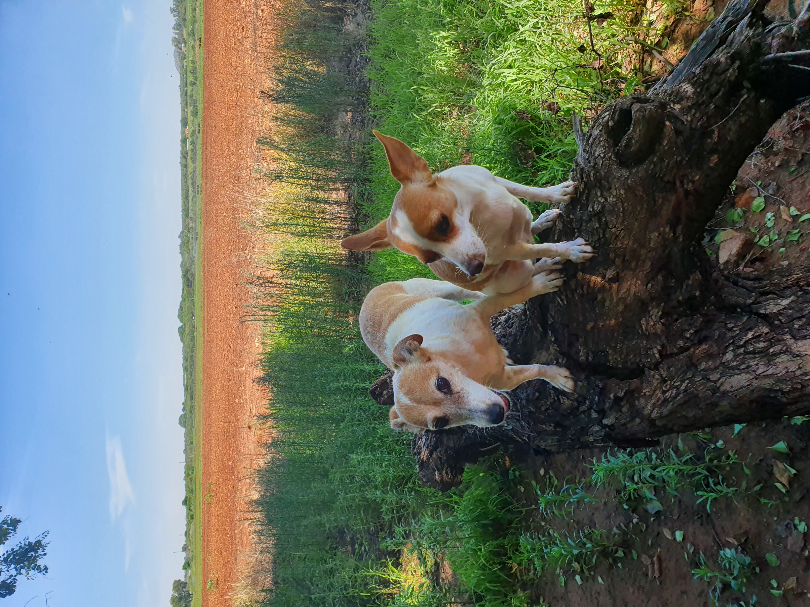
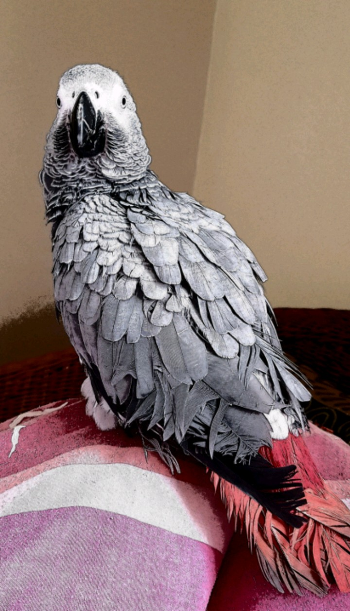
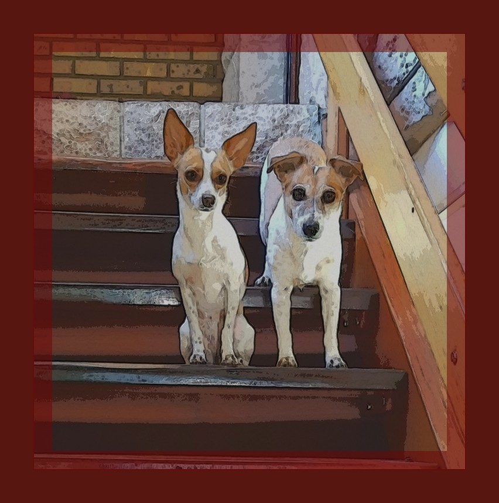

Welcome
This website project will give you a glimpse into my life and what my passions are. It includes my past as well as my present loves. You will hopefully understand me better and see a small portion of how I think, many people have tried but failed to understand my thought process as well as my values.
A History
A brief overview of myself: I am very passionate about my animals, especially my dogs, birds and horses. I enjoy extreme adrenaline inducing activities such as horse riding, mountain biking and rock climbing.
I also enjoy reading to an extreme extent. I read various genres but my main focuses are on
- Science Fiction
- Fantasy
- Paranormal
- Romance
- Thriller
- Horror
- Dark Romance

